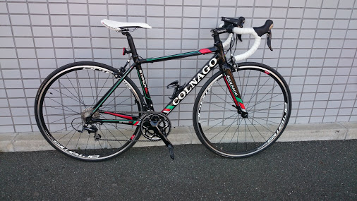

HOME
MY NAME
LIKE LANGUAGE
WHY
HOBBY
COMMENT
Hello,
World
PG研修
HTMLを用いた自己紹介ページの作成
PROFESSIONAL
FRIENDLY
SUITABLE
Who's
Me?
My github name
My name is
skurisaki
I like...?
C言語
#include<stdio.h> int main(){ printf("Hello,World¥n"); return 0; }
Why Lile
C ?
Cは私が一番最初に学習した言語だからです。
また、できることは少ないがこれを元に発展していったという拡張性がある点
今はできることが少なくても、これからの技術習得でなににも変わっていけるという点が自分の目標でもあるため
（最後に必ず0に戻る一文を記述する必要があるところもかわいいです。）
Hobby
What's I like ?
Cycling
Camera
Make Movie

Leave My
message
卒業論文が無事に終わっていよいよ卒業です！！
今回初めて「ブートストラップ」を触ってみました。
前から、1ページで完結するWEBを作ってみたかったのですが
触っているうちに楽しくなってしまって詰め込みすぎました。
もっといろんな場面でいじってみたいです！
@clip_kurisu